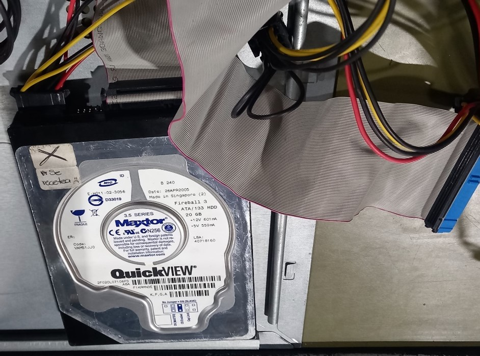
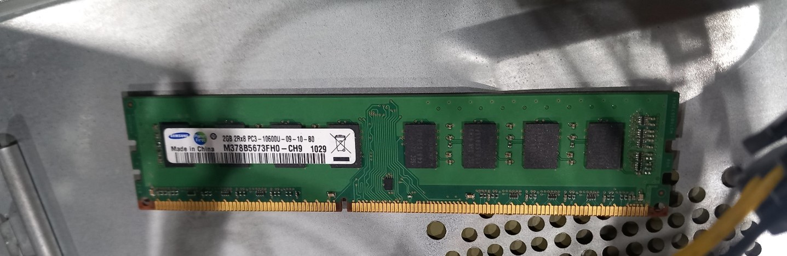
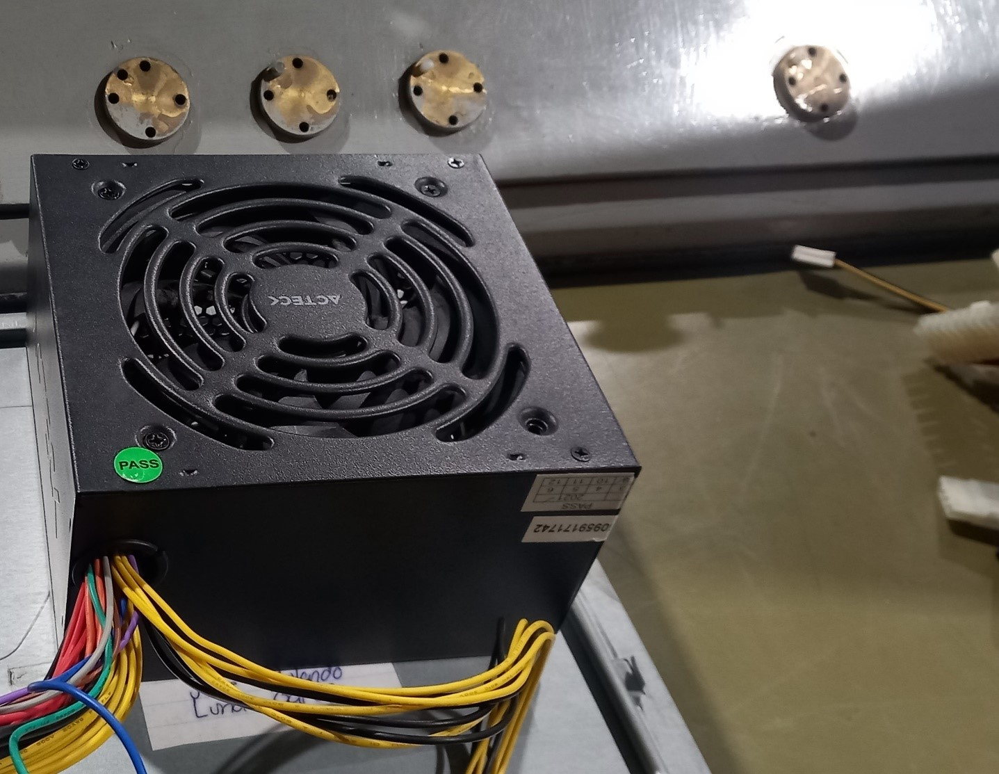
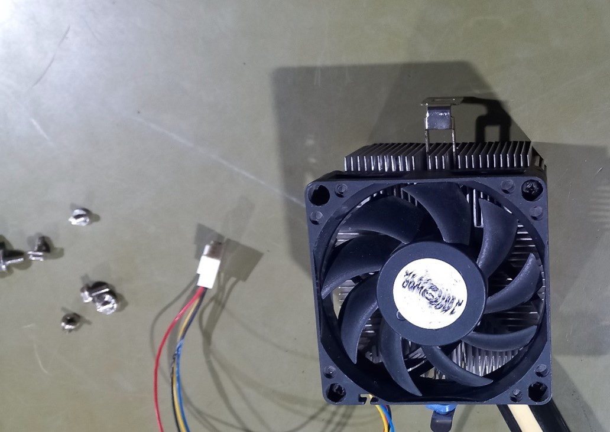
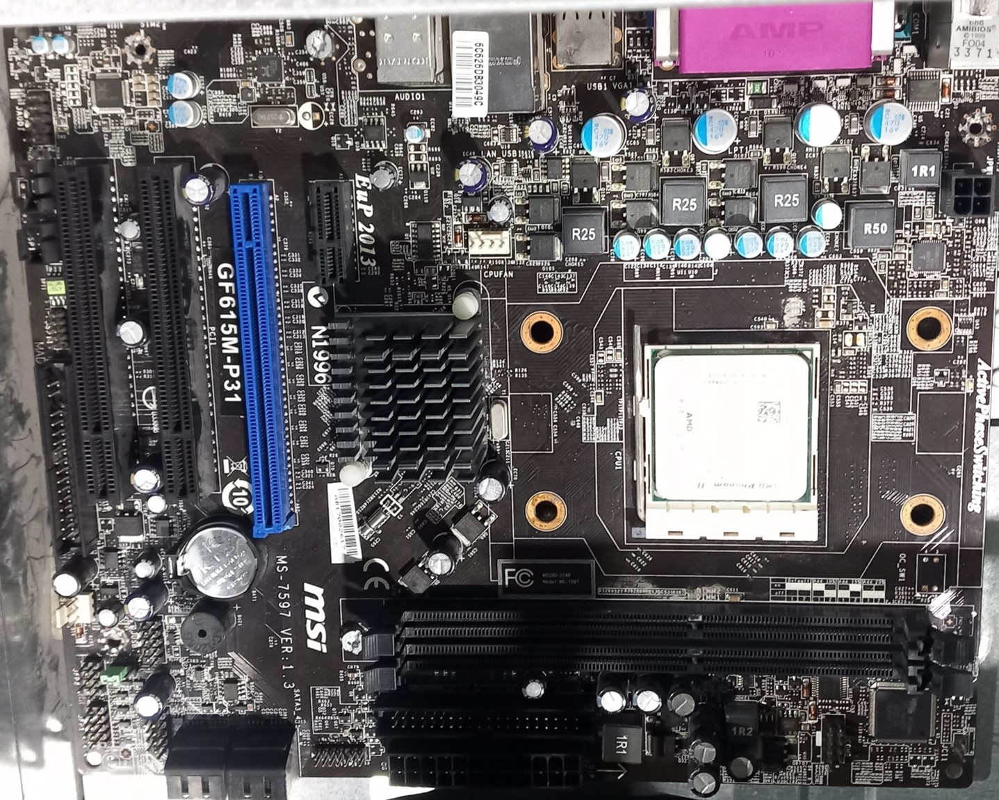

1 - DISCO DURO:
Caracteristicas:
- 3.5 Pulgadas.
- Capacidad: 20 GB.
- Requisitos de energía: -12V 601mA, +5V 559mA.
- LBA: 40718160.
- Uso: Disco duro interno para computadoras de escritorio.
2 -MEMORIA RAM:
Caracteristicas:
- Capacidad: 2 GB
- Tipo: DDR3 SDRAM
- Velocidad: 1333 MHz (PC3-10600U)
- Factor de forma: DIMM de 240 pines (para escritorios)
- Voltaje: 1.5 V
- Temporizaciones: CL9
- Doble rango (Dual Rank): 2Rx8
3- FUENTE DE PODER:
Caracteristicas:
Consumo de energía:
- *Entrada:* 115-230 Vca, 60-50 Hz, 6-3 A
- *Salida:*
- +5 V, 30 A
- +3.3 V, 25 A
- +12 V, 30 A
- -12 V, 0.8 A
4 - DISIPADOR:
Caracteristicas:
Disipador Activo
ventilator:
• Diseño estándar de 7 aspas.
• Alimentación mediante conector de 3 o 4 pines
• Tamaño aproximado de 80 mm.
5 - TARJETA MADRE
Caracteristicas:
- *Fabricante:* MSI (Micro-Star International)
- *Modelo:* GF615M-P31 (MS-7597 Ver: 1.3)
- *Socket: AM2+/AM3,
- *Memoria:* Soporte para DDR3
- *Factor de forma: MicroATX
- *Características: Incluye ranuras PCI, conectores SATA y chipset GF615M